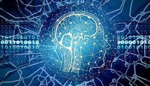

Articles

Définition de l'intelligence artificielle :
L'intelligence artificielle (IA, ou AI en anglais pour Artificial Intelligence) consiste à mettre en œuvre un certain nombre de techniques visant à permettre aux machines d'imiter une forme d'intelligence réelle. L'IA se retrouve implémentée dans un nombre grandissant de domaines d'application.
La notion voit le jour dans les années 1950 grâce au mathématicien Alan Turing. Dans son livre Computing Machinery and Intelligence, ce dernier soulève la question d'apporter aux machines une forme d'intelligence. Il décrit alors un test aujourd'hui connu sous le nom « Test de Turing » dans lequel un sujet interagit à l'aveugle avec un autre humain, puis avec une machine programmée pour formuler des réponses sensées. Si le sujet n'est pas capable de faire la différence, alors la machine a réussi le test et, selon l'auteur, peut véritablement être considérée comme « intelligente ».
De Google à Microsoft en passant par Apple, IBM ou Facebook, toutes les grandes entreprises dans le monde de l'informatique planchent aujourd'hui sur les problématiques de l'intelligence artificielle en tentant de l'appliquer à quelques domaines précis. Chacun a ainsi mis en place des réseaux de neurones artificiels constitués de serveurs et permettant de traiter de lourds calculs au sein de gigantesques bases de données.
L'IA, quelques exemples d’usage
La vision artificielle, par exemple, permet à la machine de déterminer précisément le contenu d'une image pour ensuite la classer automatiquement selon l'objet, la couleur ou le visage repéré.
Les algorithmes sont en mesure d'optimiser leurs calculs au fur et à mesure qu'ils effectuent des traitements. C'est ainsi que les filtres antispam deviennent de plus en plus efficaces au fur et à mesure que l'utilisateur identifie un message indésirable ou au contraire traite les faux-positifs.
La reconnaissance vocale a le vent en poupe avec des assistants virtuels capables de transcrire les propos formulés en langage naturel puis de traiter les requêtes soit en répondant directement via une synthèse vocale, soit avec une traduction instantanée ou encore en effectuant une requête relative à la commande.
L'intelligence artificielle, un potentiel infini
Les possibilités de l'IA semblent s'accroître de manière exponentielle.
Ces dernières années, nous sommes passés du simple chatbot à l'utilisation de l'intelligence artificielle pour l'aide à la prise de décisions cruciales, que ce soit dans le domaine médical ou militaire.
Avec des champs d'applications si divers, les besoins en experts des données se font sentir dans nombre de secteurs d'activité. C'est notamment le cas des acteurs de la Banque et des assurances qui n'ont pas hésité à se préparer aux métiers de demain, avec des écoles spécialisées et des formations pour devenir Data Analyst par exemple.
Alors qu'en 2015 le marché de l'intelligence artificielle pesait 200 millions de dollars, on estime qu'en 2025, il s'élèvera à près de 90 milliards de dollars.
L’intelligence artificielle c’est quoi ?
Ses limites sont sans cesse repoussées, et elle est dans toutes les bouches. Et pas uniquement celles des scientifiques. L'intelligence artificielle (IA), qui appartenait autrefois strictement à la science-fiction, entre peu à peu dans nos vies. Et les possibilités qu'elle offre vont bien plus loin que la force destructrice de Terminator. Il suffit de converser avec son assistant Google pour s'en rendre compte.
Derrière l'intelligence artificielle, se cache une multitude d'appareils qui ont un dénominateur commun : le machine learning. Cette technologie permet de stocker une grande quantité de données dans un cerveau ou réseau neuronal virtuel. On distingue l'intelligence artificielle forte de l'intelligence artificielle faible. La première inclut les machines capables d'agir de façon intelligente, mais aussi d'assimiler des concepts abstraits et d'avoir une véritable conscience proche des sentiments éprouvés par les êtres humains. Les machines qui se limitent à résoudre des problèmes entrent dans la catégorie d'intelligence artificielle faible.
A quoi sert l’intelligence artificielle ?
Les domaines d'application de l'intelligence artificielle sont nombreux. Elle est présente dans les appareils photo des smartphones. En mode nocturne, elle permet d'adapter la colorimétrie à l'environnement, et de redonner à une façade éclairée son éclat originel pour le reproduire fidèlement sur votre cliché.
En photographie, l'IA intervient aussi pour détecter des scènes précises, pour stabiliser l'appareil ou pour optimiser la précision du zoom. La reconnaissance faciale est une autre technologie rendue possible grâce à l'intelligence artificielle. Elle sert à reconnaître l'utilisateur d'un téléphone portable, mais aussi à plus grande échelle à identifier des personnes, par exemple dans les aéroports.
L'IA est aussi introduite dans le domaine militaire (par exemple pour la prise de décisions des drones), dans le secteur des finances (évaluation des risques d'une opération comme l'octroiement d'un crédit immobilier), en médecine (diagnostic d'affections oculaires), en robotique, dans les jeux vidéo (animation des personnages non-joueurs), dans les transports (gestion du trafic dans les transports en commun) et les industries (mise en place de systèmes de maintenance pour faire face aux problèmes de production).
Comment fonctionne l’intelligence artificielle ?
Les machines dotées d'une intelligence artificielle mémorisent des comportements. Ce travail de mémorisation leur permet par la suite de résoudre des problèmes, et d'agir correctement face à telle ou telle situation. Cet apprentissage se réalise à l'aide de bases de données et d'algorithmes. Ce travail complexe aide la machine à mesurer l'importance d'un problème, à passer au crible les solutions possibles et les situations passées similaires afin de bien agir.
C'est en réalité un système de statistiques sophistiqué et très performant qui conduisent la machine à prendre une décision ou à avoir le comportement attendu. Pour mesurer son degré d'intelligence, une machine est soumise au test de Turing. Ce test porte le nom de l'inventeur de l'IA, Alan Turing. Ce mathématicien britannique fut l'un des premiers à se demander, en 1950, si une machine était capable de penser. Le test de Turing consiste à converser avec la machine et à lui demander de créer quelque chose avec des critères précis qu'elle se doit de respecter.
Interview
Face à l'intelligence artificielle, l'humanité est confrontée à un choix cornélien : embrasser ou contester une révolution digitale qui, certes, améliore notre vie quotidienne et notre santé, mais menace nos emplois et nos libertés. Cette révolution digitale qui s'impose aux grandes puissances pourrait-elle être la voie d'une émancipation individuelle ? Éléments de réponse avec Pascal Boniface, fondateur de l'Institut de relations internationales et stratégiques (IRIS), et auteur d'un ouvrage sur le sujet : "Géopolitique de l'intelligence artificielle" (éd. Eyrolles).
À la maison, en entreprise, dans les services clients… les solutions alimentées par l’IA sont toujours plus nombreuses. Selon une étude réalisée aux États-Unis par la société Interactions, une large majorité des consommateurs (65%) disent être à l’aise avec l’Intelligence Artificielle et 82% déclarent en vouloir que les entreprises poursuivent leur développement après la fin de la pandémie. Avec nos assistants vocaux et nos appareils connectés, il faut avouer que l’IA est déjà bien implantée dans nos vies. À la maison, 62% des sondés expliquent être en confiance avec leurs smart-devices et 51% sont d’accord pour leur confier des missions de sécurité de manière autonome, comme verrouiller une porte ou éteindre un four. Sans oublier qu’en matière de confort, la domestique aussi gagne du terrain avec la gestion du chauffage, de la climatisation ou des courses lorsque le frigo se vide. Avec nos assistants vocaux et nos appareils connectés, il faut avouer que l’IA est déjà bien implantée dans nos vies. À la maison, 62% des sondés expliquent être en confiance avec leurs smart-devices et 51% sont d’accord pour leur confier des missions de sécurité de manière autonome, comme verrouiller une porte ou éteindre un four. Sans oublier qu’en matière de confort, la domestique aussi gagne du terrain avec la gestion du chauffage, de la climatisation ou des courses lorsque le frigo se vide.
Par Pierrick Aubert pour Watch IT